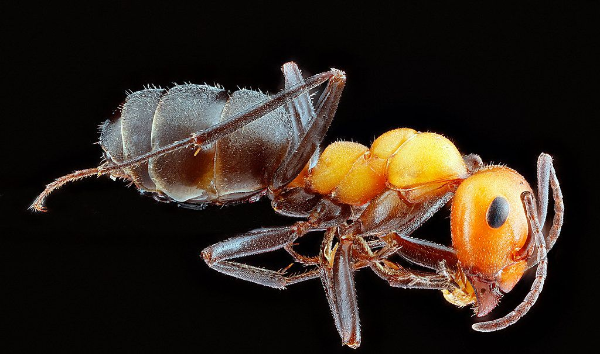

Ants are the most common pest problem in West Haven, CT, and they are far more than a nuisance. A single visible trail of ants marching across your counter usually represents a small fraction of a colony that may number in the tens of thousands, hidden inside walls, beneath slabs, or out in the yard. Argentine ants form massive interconnected supercolonies, odorous house ants emit a rotten-coconut smell when crushed, pavement ants nest under driveways and foundations, and carpenter ants tunnel through moist wood and can damage structural timbers over time. Correctly identifying the species is the difference between a treatment that works and one that simply scatters the problem.
At West Haven Pest Control, our experienced technicians start every job with a free, thorough inspection to map the foraging routes. Because over-the-counter sprays kill foragers but leave the queen and brood untouched, we rely on slow-acting baits that worker ants carry back and feed throughout the colony, eliminating it from the inside out. We pair this with targeted crack-and-crevice treatment and exterior perimeter barriers to stop new ants from entering.
We treat both residential and commercial properties with low-toxicity products, focusing on the nest and the source rather than just the trails you see. Recurring exterior service plans keep new colonies from gaining a foothold all season long. Call (475) 327-1573 for a free inspection and a custom ant control plan built for your property.

Signs You Need Ant Control in West Haven
The sooner you notice these red flags, the easier and cheaper the problem is to resolve. These are the signals our technicians see most often when a problem is underway:
- Steady trails of ants along counters, baseboards, or walls
- Small piles of fine sawdust near wood, hinting at carpenter ants
- Tiny dirt or sand mounds pushed up through pavement cracks
- A rotten-coconut odor when ants are crushed (odorous house ants)
- Ants swarming pet food, sugar, grease, or open spills
- Winged ants (swarmers) gathering near windows or light fixtures
- Rustling sounds inside walls where carpenter ants are active
Don't Wait Until It's an Infestation
What seems like a minor issue today can turn into a major problem tomorrow. Don't wait — get West Haven Pest Control on the phone at (475) 327-1573 and we'll take a look right away.
Ready to Solve Your Ant Control Problem?
Our experienced technicians are standing by to help.
Get Help: (475) 327-1573Frequently Asked Questions About Ant Control
Why Hire a Professional for Ant Control?
Store-bought ant sprays create a frustrating cycle: they kill the ants you can see, which actually triggers many species to split the colony and form new nests, a survival response called budding. The queen, who can lay thousands of eggs, never leaves the nest and is rarely touched by surface sprays, so the colony rebounds within days. Worse, repellent sprays drive ants deeper into wall voids where they become harder to reach.
Professional ant control works because it targets the colony's biology rather than its symptoms. experienced technicians identify the species first, then select non-repellent, slow-acting baits that foragers willingly carry back and share with the queen and brood through trophallaxis, wiping out the entire colony. We also know where ants nest, how moisture and food sources sustain them, and which exclusion points let them in. With carpenter ants in particular, a professional can spot the moisture problem and structural damage driving the infestation, something a can of spray will never resolve.
What to Expect From Our Ant Control
Every visit follows a step-by-step method refined over years of hands-on experience. Here's a look at each step our West Haven Pest Control team takes:
Free Inspection & Species ID
We inspect inside and out, identify the exact ant species, and trace trails back to nesting sites. Correct identification determines which bait and method will actually eliminate the colony.
Custom Treatment Plan
Based on the species and infestation level, we design a plan combining interior baiting, crack-and-crevice treatment, and an exterior perimeter barrier tailored to your home and budget.
Colony Elimination & Exclusion
Worker ants carry slow-acting bait back to the queen, collapsing the colony from within. We then seal entry points and treat foraging routes to block re-entry.
Follow-Up & Ongoing Protection
We return to verify the colony is gone and offer ongoing exterior monitoring. Recurring service plans keep watch on the perimeter so any new activity is caught early.
Questions About Ant Control?
Call West Haven Pest Control to discuss your ant control needs with an experienced technician.
Call (475) 327-1573 NowMaintenance Tips for Ant Control
A little prevention goes a long way in avoiding a future infestation. Here are our expert recommendations:
- Wipe up spills immediately and store sugar, honey, and pet food in sealed containers
- Seal cracks around windows, doors, pipes, and the foundation where ants enter
- Keep tree branches and shrubs trimmed back so they don't bridge to the house
- Fix leaky faucets and pipes, since moisture attracts carpenter ants and others
- Take out kitchen trash often and rinse recyclables before storing them
- Move firewood, mulch, and debris away from the foundation and exterior walls
- Keep counters, floors, and sinks free of crumbs, grease, and standing water
Comparing DIY and Professional Ant Control
Store-bought sprays may help in a pinch, yet lasting control usually depends on professional methods and trained technicians. Consider the following comparison:
| Factor | DIY Approach | Professional Service |
|---|---|---|
| Colony Reach | Kills foragers, queen survives untouched | Baiting eliminates the queen and entire colony |
| Species ID | One-size spray for every ant type | Treatment matched to the exact species |
| Budding Risk | Sprays cause colonies to split and spread | Non-repellent baits prevent colony budding |
| Carpenter Ants | Surface spray ignores hidden wood damage | We find the moisture and structural source |
| Lasting Results | Ants return within days or weeks | Exclusion and barriers stop re-entry |
| Safety | Overuse of sprays near food and pets | Family- and pet-safe targeted application |
Get Ant Control Help Today
The sooner you call, the sooner we can help. Reach West Haven Pest Control for same-day service.
Call (475) 327-1573 Today